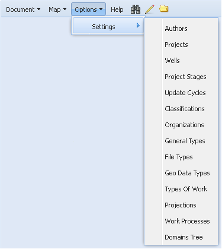
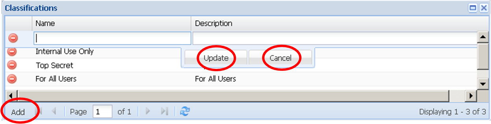
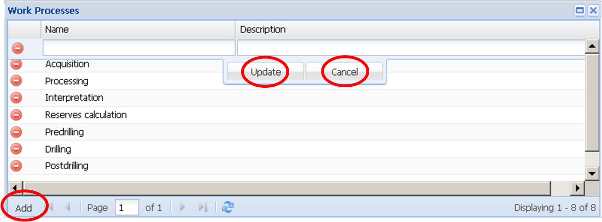
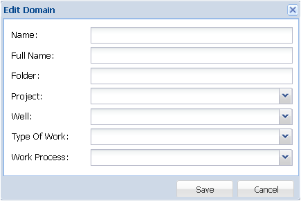

Меню Options
Меню Options (Опции) содержит единственную команду Settings (Настройки) , с помощью которой можно настраивать параметры и ниспадающие списки (справочники) метаданных и пространственных объектов. Эти действия могут быть совершены только пользователями, имеющими права на это.

Опция Authors служит для корректировки списка авторов документов. При её активации появляется дополнительное окно Authors, содержащее следующие колонки: Name (фамилия, имя, отчество), Short Name (фамилия и инициалы), E-mails (адрес электронной почты), Phones (телефон), Int (является сотрудником или внешним контрагентом), Login (пользовательский логин), Organisation (место работы).
Для удаления записи из списка следует нажать на пиктограмму  .
.
Для добавления новой записи существует опция Add в левом нижнем углу окна. При её активации появится дополнительная пустая строка для заполнения перечисленных выше сведений об авторе. Пользователь может либо добавить нового автора в список, нажав кнопку Update, либо оставить все без изменений, нажав кнопку Cancel.
Опция Projects служит для корректировки списка проектов. При её активации появляется дополнительное окно Projects с перечнем имеющихся проектов.
Для удаления записи из списка следует нажать на пиктограмму .
Для добавления новой записи существует опция Add в левом нижнем углу окна. При её активации появится дополнительная пустая строка для ввода наименования. Пользователь может либо добавить новый проект в список, нажав кнопку Update, либо оставить все без изменений, нажав кнопку Cancel.
Опция Wells служит для корректировки списка скважин. При её активации появляется дополнительное окно Wells, содержащее колонки: Name (наименование) и Site (месторождение).
Для удаления записи из списка следует нажать на пиктограмму .
Для добавления новой записи существует опция Add в левом нижнем углу окна. При её активации появится дополнительная пустая строка для ввода наименования скважины и месторождения. Пользователь может либо добавить новую запись в список, нажав кнопку Update, либо оставить все без изменений, нажав кнопку Cancel.
Опция Stages служит для корректировки списка стадий разработки проекта. При её активации появляется дополнительное окно Stages, содержащее колонки: Name (наименование) и Description (описание).
Для удаления записи из списка следует нажать на пиктограмму .
Для добавления новой записи существует опция Add в левом нижнем углу окна. При её активации появится дополнительная пустая строка для ввода наименования и описания. Пользователь может либо добавить новую запись в список, нажав кнопку Update, либо оставить все без изменений, нажав кнопку Cancel.
Опция Update cycles служит для корректировки периодичности обновления документа. При её активации появляется дополнительное окно Update cycles, содержащее колонки: Name (наименование) и Description (описание).
Для удаления записи из списка следует нажать на пиктограмму .
Для добавления новой записи существует опция Add в левом нижнем углу окна. При её активации появится дополнительная пустая строка для ввода наименования и описания. Пользователь может либо добавить новую запись в список, нажав кнопку Update, либо оставить все без изменений, нажав кнопку Cancel.
Опция Classifications служит для корректировки уровней ограничений использования документа. При её активации появляется дополнительное окно Classifications, содержащее колонки: Name (наименование) и Description (описание).
Для удаления записи из списка следует нажать на пиктограмму .
Для добавления новой записи существует опция Add в левом нижнем углу окна. При её активации появится дополнительная пустая строка для ввода наименования и описания. Пользователь может либо добавить новую запись в список, нажав кнопку Update, либо оставить все без изменений, нажав кнопку Cancel.

Опция Organizations служит для корректировки списка организаций, в которых работают авторы документов. При её активации появляется дополнительное окно Organizations, содержащее колонки: Name (наименование) и Description (описание).
Для удаления записи из списка следует нажать на пиктограмму .
Для добавления новой записи существует опция Add в левом нижнем углу окна. При её активации появится дополнительная пустая строка для ввода наименования и описания. Пользователь может либо добавить новую запись в список, нажав кнопку Update, либо оставить все без изменений, нажав кнопку Cancel.
Опция General Types служит для корректировки списка общего типологического класса, к которому принадлежит документ. При её активации появляется дополнительное окно General Types с перечнем имеющихся типологических классов.
Для удаления записи из списка следует нажать на пиктограмму .
Для добавления новой записи существует опция Add в левом нижнем углу окна. При её активации появится дополнительная пустая строка для ввода наименования. Пользователь может либо добавить новую запись в список, нажав кнопку Update, либо оставить все без изменений, нажав кнопку Cancel.
Опция File Types служит для корректировки списка типов документов (файлов). При ее активации появляется дополнительное окно File Types, содержащее следующие колонки: Name (название типа файла), Multi (отметка о комплексности файла), Is Geo (отметка о географичности данных), Supertype (типологический класс), File types (расширение файла).
Для удаления записи из списка следует нажать на пиктограмму .
Для добавления новой записи существует опция Add в левом нижнем углу окна. При её активации появится дополнительная пустая строка для заполнения перечисленных выше колонок. Пользователь может либо добавить новую запись в список, нажав кнопку Update, либо оставить все без изменений, нажав кнопку Cancel.
Опция Geo Data Types служит для корректировки типов графической модели пространственных объектов. При её активации появляется дополнительное окно Geo Data Types, содержащее колонки: Name (наименование) и Description (описание).
Для удаления записи из списка следует нажать на пиктограмму .
Для добавления новой записи существует опция Add в левом нижнем углу окна. При её активации появится дополнительная пустая строка для ввода наименования и описания. Пользователь может либо добавить новую запись в список, нажав кнопку Update, либо оставить все без изменений, нажав кнопку Cancel.

Опция Types of Work служит для корректировки списка типов работ. При её активации появляется дополнительное окно Types of Work, содержащее колонки: Name (наименование) и Description (описание).
Для удаления записи из списка следует нажать на пиктограмму .
Для добавления новой записи существует опция Add в левом нижнем углу окна. При её активации появится дополнительная пустая строка для ввода наименования и описания. Пользователь может либо добавить новую запись в список, нажав кнопку Update, либо оставить все без изменений, нажав кнопку Cancel.
Опция Projections служит для корректировки типов проекций хранения геоданных. При её активации появляется дополнительное окно Projections, содержащее колонки: EPSG (международный код проекции), Name (наименование) и Description (описание).
Для удаления записи из списка следует нажать на пиктограмму .
Для добавления новой записи существует опция Add в левом нижнем углу окна. При её активации появится дополнительная пустая строка для заполнения колонок. Пользователь может либо добавить новую запись в список, нажав кнопку Update, либо оставить все без изменений, нажав кнопку Cancel.
Опция Work Processes служит для корректировки списка стадий работ. При её активации появляется дополнительное окно Work Processes, содержащее колонки: Name (наименование) и Description (описание).
Для удаления записи из списка следует нажать на пиктограмму .
Для добавления новой записи существует опция Add в левом нижнем углу окна. При её активации появится дополнительная пустая строка для ввода наименования и описания. Пользователь может либо добавить новую запись в список, нажав кнопку Update, либо оставить все без изменений, нажав кнопку Cancel.

Опция Domains Tree служит для корректировки дерева размещения файлов. При её активации появляется дополнительное окно Domains Tree, содержащее иерархическую структуру хранилища АСХД (каталог папок) и кнопки управления для работы с ней.
Структура отражает логику хранения документов по тематическим разделам и пространственной привязке.
Для корректировки иерархической структуры существует инструментарий, позволяющий удалять, добавлять и редактировать папки для хранения документов. Для этого слева от названия каждой папки расположены специальные пиктограммы с всплывающими подсказками.
Пиктограмма служит для удаления папок. После начала рабочего заполнения хранилища удалять можно только пустые папки, не содержащие документов. При активации пиктограммы Приложение предварительно выдаст окно предупреждения для подтверждения действия.
Пиктограмма  служит для добавления папок. Предварительно пользователь должен указать место новой папки в иерархической структуре. Для этого следует раскрыть каталог до нужного уровня и курсором засветить родительскую папку (т.е. в которую будет вложена создаваемая папка).
служит для добавления папок. Предварительно пользователь должен указать место новой папки в иерархической структуре. Для этого следует раскрыть каталог до нужного уровня и курсором засветить родительскую папку (т.е. в которую будет вложена создаваемая папка).
При активации пиктограммы появится дополнительное окно Edit Domain с пустыми полями для заполнения.

После нажатия опции Save новая папка появится в каталоге папок.
Пиктограмма служит для редактирования существующих папок каталога. При активации пиктограммы, расположенной напротив редактируемой папки, появится дополнительное окно Edit Domain с заполненными полями, которые при необходимости можно откорректировать.